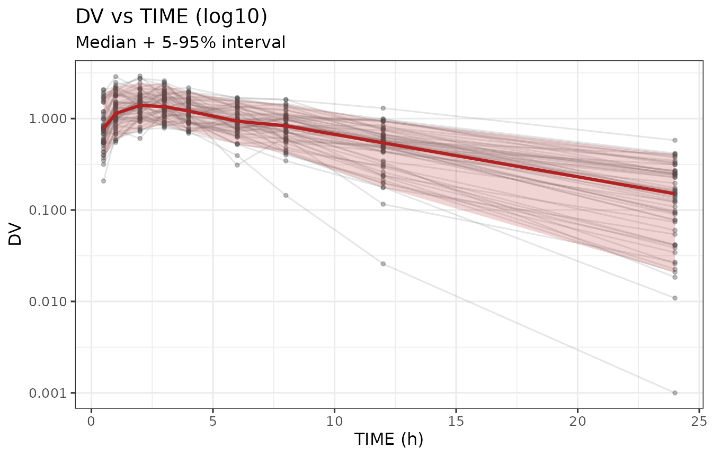
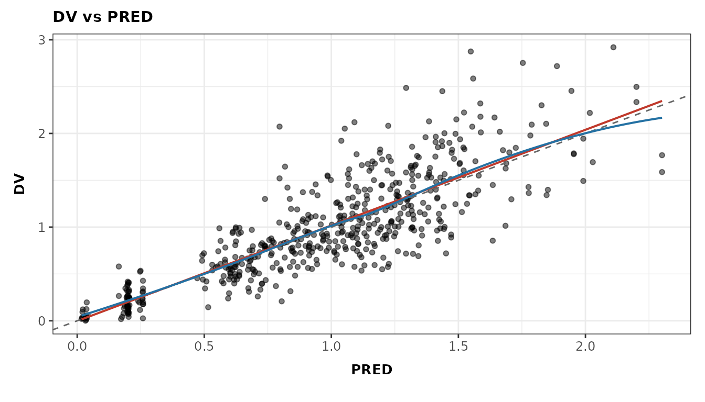
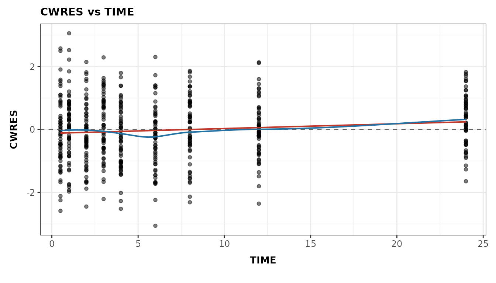

This vignette walks through a small popPK analysis with nmpilot, from the data set and a first control stream to the comparison of two models. NONMEM is not needed to read it: the package ships an example project whose NONMEM runs have already been made. The chunks that call NONMEM are shown but not run.
library(nmpilot)
ex <- system.file("extdata", "example", package = "nmpilot")
list.files(ex, recursive = TRUE)
#> [1] "example_data.csv" "README.txt" "run1.ctl"
#> [4] "run1.reg/run1.cor" "run1.reg/run1.cov" "run1.reg/run1.ctl"
#> [7] "run1.reg/run1.ext" "run1.reg/run1.lst" "run1.reg/run1.phi"
#> [10] "run1.reg/run1.shk" "run1.reg/sdtab1" "run2.ctl"
#> [13] "run2.reg/run2.cor" "run2.reg/run2.cov" "run2.reg/run2.ctl"
#> [16] "run2.reg/run2.ext" "run2.reg/run2.lst" "run2.reg/run2.phi"
#> [19] "run2.reg/run2.shk" "run2.reg/sdtab2" "sim_example_data.R"The data are simulated (60 fictitious subjects,
single oral dose of 100 mg, 9 samples each, body weight WT
and a binary genotype GENO; see README.txt and
sim_example_data.R in the example folder). Two models were
fitted with NONMEM 7.6:
-
run1: one-compartment model with first-order absorption, no covariate (BASE); -
run2: same model with weight on CL (estimated exponent) and V (exponent fixed to 1), and genotype on CL (FINAL).
1. The data set
nm_read_csv() reads a NONMEM data set, identifies the
reserved columns and computes the time after dose.
nm_summary() gives a short diagnostic.
dat <- nm_read_csv(file.path(ex, "example_data.csv"))
#> === Identified NONMEM columns ===
#> ID -> ID
#> DV -> DV
#> MDV -> MDV
#> TIME -> TIME
#> EVID -> EVID
#> AMT -> AMT
#> CMT -> CMT
#> TIME format: numeric
#> TAD computed (600 values).
nm_summary(dat$data)
#> === Diagnostic summary ===
#> Subjects : 60
#> Records : 600
#> Observations : 540
#> TIME range : 0.00 - 24.00 h
#> Distinct doses : 100
#> Observation CMTs : 1
nm_plot_dv(dat$data, scales = "log", verbose = FALSE)
2. Writing a control stream
nm_write_ctl() writes a first control stream from the
columns of the data set: here a one-compartment model with first-order
absorption, as in run1, with a combined error model.
$INPUT follows the column order of the file, the
# of #ID becomes the IGNORE
character, and the covariates are written in a cotab
table.
ctl <- nm_write_ctl(data = "../example_data.csv",
input = file.path(ex, "example_data.csv"),
error = "combined", theta_init = c(CL = 4, V = 40),
covariates = c("WT", "GENO"))
ctl
#> $PROBLEM 1cpt EV SUB/TRANS abs=first-order elim=linear
#> $INPUT ID TIME AMT DV EVID MDV CMT WT GENO
#> $DATA ../example_data.csv IGNORE=#
#> $SUBROUTINES ADVAN2 TRANS2
#> $PK
#> TVCL = THETA(1)
#> CL = TVCL*EXP(ETA(1))
#> TVV = THETA(2)
#> V = TVV*EXP(ETA(2))
#> TVKA = THETA(3)
#> KA = TVKA*EXP(ETA(3))
#> S2 = V ; scale: concentration in the central compartment
#>
#> $ERROR
#> IPRED = F
#> W = SQRT(IPRED**2*SIGMA(1,1) + SIGMA(2,2))
#> IF (W.EQ.0) W = 1
#> IRES = DV - IPRED
#> IWRES = IRES/W
#> Y = IPRED + IPRED*ERR(1) + ERR(2)
#>
#> $THETA ; initial estimates and bounds
#> (0, 4) ; CL
#> (0, 40) ; V
#> (0, 1) ; KA
#>
#> $OMEGA 0.039 ; ETA(CL)
#> $OMEGA 0.039 ; ETA(V)
#> $OMEGA 0.086 ; ETA(KA)
#>
#> $SIGMA 0.09 ; ERR(1) proportional
#> $SIGMA 0.01 ; ERR(2) additive
#>
#> $ESTIMATION METHOD=COND INTERACTION MAXEVAL=9999 SIGDIGITS=3 PRINT=5
#> $COVARIANCE PRINT=E MATRIX=S
#>
#> $TABLE ID TIME AMT EVID MDV CMT DV PRED IPRED RES IRES WRES IWRES CWRES NPDE ESAMPLE=300 SEED=12334 NOAPPEND NOPRINT ONEHEADER FILE=sdtab
#> $TABLE ID ETA1 ETA2 ETA3 FIRSTONLY NOPRINT NOAPPEND ONEHEADER FILE=patab
#> $TABLE ID WT GENO FIRSTONLY NOPRINT NOAPPEND ONEHEADER FILE=cotabnm_ctl_check() looks for inconsistencies that can be
seen without NM-TRAN, such as a THETA, ETA or EPS used without a
declaration. It also works on a control stream written by hand:
nm_ctl_check(ctl)
#> [OK] Check - No obvious inconsistency found by the static checks.
nm_ctl_check(file.path(ex, "run1.ctl"))
#> [OK] Check - No obvious inconsistency found by the static checks.Three functions transform a control stream: nm_ctl_mu()
(MU referencing, for the EM and Bayesian methods),
nm_ctl_iov() (inter-occasion variability) and
nm_ctl_m3() (M3 method for data below the limit of
quantification). With reference,
nm_ctl_check() shows what changed:
mu <- nm_ctl_mu(ctl)
nm_ctl_check(mu, reference = ctl)
#> [OK] Check - No obvious inconsistency found by the static checks.
#>
#> Differences from reference: 6 line(s) removed, 9 added
#> - TVCL = THETA(1)
#> - CL = TVCL*EXP(ETA(1))
#> - TVV = THETA(2)
#> - V = TVV*EXP(ETA(2))
#> - TVKA = THETA(3)
#> - KA = TVKA*EXP(ETA(3))
#> + ; MU referencing - former definition: TVCL = THETA(1)
#> + MU_1 = LOG(THETA(1))
#> + CL = EXP(MU_1 + ETA(1))
#> + ; MU referencing - former definition: TVV = THETA(2)
#> + MU_2 = LOG(THETA(2))
#> + V = EXP(MU_2 + ETA(2))
#> + ; MU referencing - former definition: TVKA = THETA(3)
#> + MU_3 = LOG(THETA(3))
#> + KA = EXP(MU_3 + ETA(3))Use output_file = "run3.ctl" to write the result to
disk.
3. Running NONMEM
nm_run() calls the nmfe launcher directly
(no PsN, no Wings for NONMEM). By default each run gets its own
<run>.reg subdirectory, as in the example folder;
run_subdir = "" runs it next to its control stream instead.
The functions that write files are run here on a copy of the example
folder.
4. Results of all the runs
nm_extract_runs() reads every run of a folder: objective
function, minimisation and covariance status, parameters with their RSE
and shrinkage. Parameters are named from the model code
(CL, V, KA…).
runs <- nm_extract_runs(ex)
#> * run : run1
#> * run : run2
runs$runs[, c("run", "ofv", "dOFV", "min_ok", "cov_status")]
#> # A tibble: 2 × 5
#> run ofv dOFV min_ok cov_status
#> <chr> <dbl> <dbl> <lgl> <chr>
#> 1 run2 -1224. 0 TRUE COMPLETED
#> 2 run1 -1147. 76.7 TRUE COMPLETED
nm_compare_runs(runs, what = "value", format = TRUE)
#> # A tibble: 21 × 4
#> type name run1 run2
#> <chr> <chr> <chr> <chr>
#> 1 THETA ADD 0.0138 (29%) "0.0146 (25%)"
#> 2 THETA CL 6.06 (5%) "5.13 (4%)"
#> 3 THETA CL_GENO NA "1.84 (9%)"
#> 4 THETA CL_WT NA "0.454 (44%)"
#> 5 THETA KA 1.22 (6%) "1.22 (6%)"
#> 6 THETA PROP 0.168 (4%) "0.168 (4%)"
#> 7 THETA V 54.2 (4%) " 52 (3%)"
#> 8 OMEGA CL 0.143 (20%) "0.0683 (17%)"
#> 9 OMEGA KA 0.178 (26%) "0.172 (26%)"
#> 10 OMEGA V 0.0843 (19%) "0.0423 (21%)"
#> # ℹ 11 more rowsThe link between each THETA/ETA and the PK parameter comes from
nm_identify_parameters():
nm_identify_parameters(file.path(ex, "run2.ctl"))$parameter_table
#> PK_parameter THETA_typical THETA_covariate THETA_IIV_scale ETA_IIV
#> 1 CL THETA(1) THETA(6), THETA(7) <NA> ETA(1)
#> 2 KA THETA(3) <NA> <NA> ETA(3)
#> 3 S2 THETA(2) <NA> <NA> ETA(2)
#> 4 V THETA(2) <NA> <NA> ETA(2)
#> THETA_other derived_from
#> 1 <NA> <NA>
#> 2 <NA> <NA>
#> 3 <NA> V
#> 4 <NA> <NA>A parameter table of one run can be exported to Word with
nm_extract_run_table() (packages flextable and
officer):
nm_extract_run_table(file.path(proj, "run2.reg"))5. Goodness-of-fit plots
gof <- nm_gof(file.path(ex, "run2.reg", "sdtab2"))
names(gof$plots)
#> [1] "dv_pred" "dv_ipred" "cwres_time" "cwres_pred" "npde_time"
#> [6] "npde_pred" "iwres_pred"
gof$plots$dv_pred
gof$plots$cwres_time
6. Comparing two models
nm_compare() puts the BASE and FINAL runs side by side,
subject by subject and observation by observation.
cmp <- nm_compare(file.path(ex, "run1.reg"), file.path(ex, "run2.reg"),
labels = c("BASE", "FINAL"))
cmp
#> === NONMEM run comparison ===
#> Run 1 : BASE (OFV = -1147.341)
#> Run 2 : FINAL (OFV = -1224.035)
#> Delta OFV : -76.694
#> N subjects : 60 | N paired obs : 540
#>
#> --- Global metrics ---
#> metric run1 run2 delta
#> OFV -1.147341e+03 -1.224035e+03 -7.669400e+01
#> RMSE(CWRES) 1.001100e+00 1.001297e+00 1.965649e-04
#> Mean |CWRES| 8.002245e-01 8.044231e-01 4.198557e-03
#> Prop |CWRES|>2 4.444444e-02 4.259259e-02 -1.851852e-03
#> Mean NPDE 2.958638e-02 3.545775e-02 5.871374e-03
#> SD NPDE 1.020783e+00 1.026769e+00 5.985522e-03
#> Prop |NPDE|>1.96 5.000000e-02 5.555556e-02 5.555556e-03
#>
#> Paired Wilcoxon on |CWRES| : p = 0.8306
#>
#> --- Tests on individual contributions (iOFV) ---
#> test correction statistic p favours
#> Vuong none 6.159 7.30e-10 FINAL
#> Vuong AIC 5.838 5.28e-09 FINAL
#> Vuong BIC 5.502 3.76e-08 FINAL
#> Clarke none 49.000 7.56e-07 FINAL
#> Clarke AIC 47.000 1.21e-05 FINAL
#> Clarke BIC 47.000 1.21e-05 FINAL
#>
#> Subject bootstrap (2000, no refit): dOFV 95% CI [-101.3; -50.7], P(FINAL better) = 1.000
#> Subjects to remove to reverse dOFV: 33 of 60
#>
#> --- Parameters (matched by name) ---
#> type name est BASE RSE% est FINAL RSE% ratio
#> THETA ADD 0.01383 28.850 0.01456 24.850 1.0530
#> THETA CL 6.06500 4.975 5.13100 4.145 0.8461
#> THETA CL_GENO NA NA 1.83600 8.720 NA
#> THETA CL_WT NA NA 0.45370 44.350 NA
#> THETA KA 1.22300 6.208 1.21900 6.241 0.9964
#> THETA PROP 0.16820 4.190 0.16820 4.128 1.0000
#> THETA V 54.17000 4.016 52.04000 3.054 0.9606
#> OMEGA CL 0.14280 20.310 0.06826 16.550 0.4779
#> OMEGA KA 0.17790 26.200 0.17250 26.130 0.9694
#> OMEGA V 0.08429 19.170 0.04235 21.370 0.5024
#> SIGMA EPS1 1.00000 NA 1.00000 NA 1.0000
#>
#> summary() gives the decision criteria; plot() the paired diagnostics.7. Visual predictive check
The VPC needs two more NONMEM runs (the model re-run on the data, and
the simulations). nm_vpc_ctl() writes and launches them,
then nm_vpc() draws the VPC or the prediction-corrected
VPC.
nm_vpc_ctl(file.path(proj, "run2.ctl"),
nmfe_path = "C:/nm76g64/run/nmfe76.bat", n_sim = 500)
nm_vpc(file.path(proj, "run2.ctl"),
col_names = c("NSIM", "ID", "TIME", "AMT", "MDV", "DV", "PRED", "IPRED"),
type = 2)8. Uncertainty
nm_profile() (likelihood profiles),
nm_bootstrap() (case bootstrap) and
nm_jackknife() (influence of each subject) also run NONMEM
and are not executed here.
prof <- nm_profile(file.path(proj, "run2.ctl"), "C:/nm76g64/run/nmfe76.bat",
param = "THETA(6)", from = 0.1, to = 1, by = 0.1)
boot <- nm_bootstrap(file.path(proj, "run2.ctl"), "C:/nm76g64/run/nmfe76.bat",
n = 500)
jk <- nm_jackknife(file.path(proj, "run2.reg", "run2.ctl"),
nmfe_path = "C:/nm76g64/run/nmfe76.bat")
plot(jk, "scatter")The covariate assessment based on the Wasserstein distance is
described in
vignette("wasserstein", package = "nmpilot").